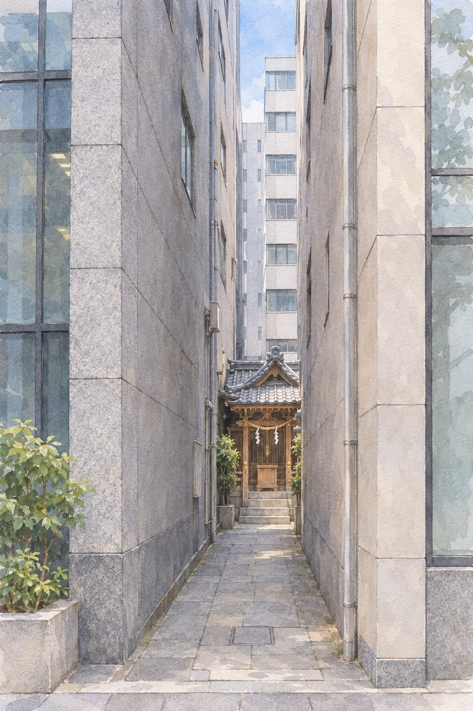
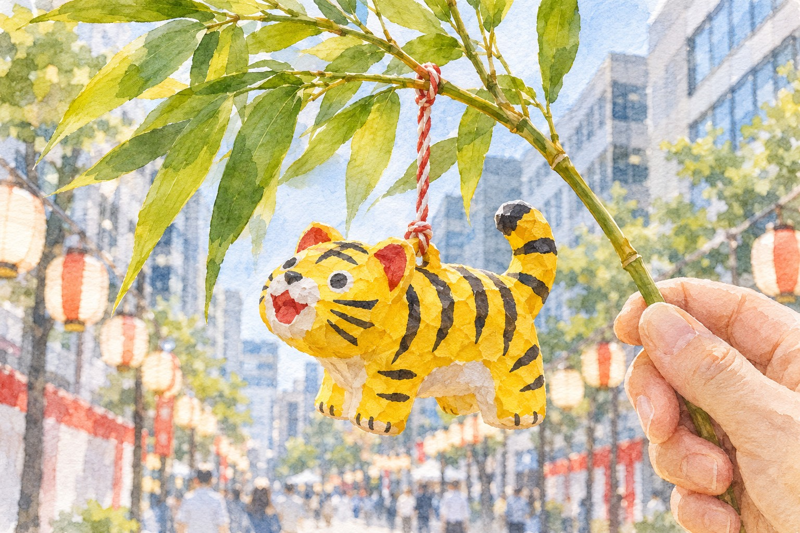

Between the office towers of Kitahama runs Doshōmachi, where Osaka's drug trade has been concentrated since the Edo period. Its shrine hands out paper tigers because of an 1822 cholera outbreak and a pun, and on two days a year the whole street turns into its festival.
道修町 Doshōmachi · 神農祭 Shinnō-saiChūō-ku, OsakaFacts checked 1 November 2026
AI-generated illustration · An imagined scene, not a photograph or an exact depiction of the place or event.
You know Osaka through Dotonbori and its food, and maybe the castle. The business district a few stops north on the Midōsuji Line, Yodoyabashi and Kitahama, is where people go to work, not to look. Walk one street east–west through it, though, and the company names on the buildings start repeating a theme: pharmaceuticals, one after another, with a small shrine wedged between them.
The street is Doshōmachi (道修町). The shrine is Sukunahikona Jinja (少彦名神社), called Shinnō-san (神農さん) locally. And on 22 and 23 November it holds the Shinnō Festival (神農祭), which the shrine itself calls the closing festival, tome no matsuri (とめの祭): Osaka's festival year opens with Ebessan in January and ends here. The pharmacy trade paper Yakuji Nippō put the 2025 festival at about 50,000 visitors, on one street of office buildings.
What you give up: there is no single sight here, the museums keep office hours, and the festival days fall on a Sunday and a public holiday in 2026, when most of the museums are shut. What you get is the history of how Japan bought its medicine, told in one walkable street.
Why the drug trade is on one street薬種中買仲間 · the guild of 124
Medicine in Edo Japan meant crude drugs, roots and barks and minerals, much of it imported from China through Nagasaki and the rest gathered in Japan. Whoever could judge it, grade it and price it controlled the trade. The story told locally puts the first apothecary on this street in the Kan'ei era (1624–1644), opened by a Sakai merchant.
The decisive date is 1722. The shrine's museum states that in that year the shogun Tokugawa Yoshimune recognised 124 Doshōmachi medicine dealers as a kabunakama (株仲間), a licensed guild, giving them the right to inspect Chinese and Japanese materials, set prices and sell across the country. That same year the shogunate set up offices to check domestic herbs for authenticity in Edo, Osaka and other cities. A guild with a monopoly on grading draws the rest of the trade to it, and it stays.
The companies that grew out of these shops are still the street's landmarks. Ono Pharmaceutical traces itself to a Doshōmachi shop opened in 1717. Takeda began here in 1781 and built its head office on the street in 1928; the building is in Osaka City's heritage records. Tanabe started in 1678 in nearby Tosabori and now has its museum on Doshōmachi. Sumitomo Pharma's Osaka head office is on the street.
The street is also slowly emptying. Shionogi, a Doshōmachi fixture, moved its headquarters to the new Grand Green Osaka complex in Umeda in November 2025. Takeda's global headquarters is in Tokyo. The guild's street is becoming a street of old addresses.
The shrine came 58 years after the guild: the trade organised itself first, then gave itself a god.
Two gods of medicine in a gap between buildings少彦名神社 · Sukunahikona Jinja
The guild already worshipped Shennong (神農, Shinnō), the legendary Chinese ruler said to have tasted every plant to find out which ones healed, at its meeting hall. In 1780, the shrine says, the dealers brought over a share of the Japanese medicine god Sukunahikona-no-mikoto from Gojō Tenjin in Kyoto and enshrined the two together, so that they would have divine protection in doing their work correctly. A Chinese god for the imported drugs, a Japanese god for the home-grown ones: the shrine is the guild's business model in religious form.
It is small. You reach it down a narrow approach between office buildings. On its third floor, above the shrine office, is the free Kusuri no Doshōmachi Shiryōkan (くすりの道修町資料館), the guild's own museum, with seasonal displays of old signboards, scales and medicine packets.
Address: 2-1-8 Doshōmachi, Chūō-ku (中央区道修町2-1-8).
Getting there: Kitahama Station (北浜駅), Sakaisuji Line exit 6, about 5 min; Keihan Kitahama exit 27, about 8 min; Yodoyabashi Station (淀屋橋駅), Midōsuji Line exit 11, about 10 min.
When: Shrine gates 8:00–17:00. Museum Mon–Sat 10:00–16:00, last entry 15:30; closed Sundays and public holidays. Free.
Reality check: A 2012 English review found the museum labels Japanese only. Assume that is still true.

AI-generated illustration — not an on-site photograph. An imagined scene inspired by this section, not an accurate depiction of the real place, objects or event.
Why a tiger虎頭殺鬼雄黄圓 · kotō-sakki-uōen
In 1822 cholera reached Osaka. The shrine's account is specific. The dealers compounded a pill from Japanese and Chinese ingredients, among them powdered tiger skull, and named it kotō-sakki-uōen (虎頭殺鬼雄黄圓), roughly "tiger-head demon-killing realgar pill". They prayed over it before the shrine's gods and handed it out, and with it went a small paper tiger.
The tiger works on two levels, and the shrine spells out both. The pill had a tiger in its name. So did the disease: cholera was written 虎狼痢, with the characters for tiger and wolf. A tiger to fight a tiger. The papier-mâché tiger, hariko no tora (張子の虎), has been the shrine's emblem ever since.
The pun is the whole reason: one character links the disease, the medicine and the toy you take home.
The festival神農祭 · 22–23 November
The Shinnō Festival is the shrine's annual grand festival and an Osaka City intangible folk cultural property. The shrine's 2026 schedule gives both days as 10:00–20:00. The festival charm is a paper tiger tied to a five-leaf bamboo sprig, goyō-zasa (五葉笹), with a shrine talisman, for a safe household and freedom from illness. Stalls fill the approach and line the street outside, which for two days stops looking like a business district.
The shrine posts its own crowd advice, which is worth following. On the 22nd, entry is restricted for a while around 9:45 for the officials' group photograph. The peak is 14:00–15:00, when entry may be restricted again. After 16:00 it is usually quieter, and the festival runs on into the evening.
At the charm counter, if you want the festival one rather than a year-round tiger: 笹のお守りをひとつください (sasa no omamori o hitotsu kudasai).
When: Sun 22 and Mon 23 November 2026 (Labour Thanksgiving Day), 10:00–20:00.
Cost: Entry free. The price of the festival bamboo-and-tiger charm is not published; year-round tigers at the shrine run ¥1,200–3,800.
Reality check: The monthly hot-water rite, kentō-sai (献湯祭), held on the 23rd of every month since 1917, is the one month it skips: not in November. Do not plan around it.

AI-generated illustration — not an on-site photograph. An imagined scene inspired by this section, not an accurate depiction of the real place, objects or event.
The company museums, if you come on a weekday史料館 · shiryōkan
Two pharmaceutical firms run free museums on the street, and both keep office hours. Kyōu Shooku (杏雨書屋), the library of the Takeda Science Foundation, is a library of old medical and herbal books. Its special exhibition through 23 December 2026 is on Seimi Kaisō (舎密開宗), Udagawa Yōan's translation that introduced Western chemistry to Japan. The Tanabe Pharma Historical Museum (田辺三菱製薬史料館) on the second floor of its head office is reservation-only and has an English website.
Place
Fri 20
Sun 22
Mon 23 (holiday)
Tue 24
Shinnō Festival
—
10:00–20:00
10:00–20:00
—
Kusuri no Doshōmachi museum (shrine, 3F)
open
closed
closed
open
Kyōu Shooku 杏雨書屋, 2-3-6
open, except two Fridays a month
closed
closed
open
Tanabe museum, 3-2-10 (book ahead)
by reservation
closed
closed
by reservation
Tekijuku 適塾, Kitahama 3-3-8
open
open
open
closed (day after a holiday)
The table is the awkward truth of this street: the festival and the museums do not overlap in 2026. If the museums matter more to you than the stalls, come on Friday the 20th and check that it is not one of Kyōu Shooku's closed Fridays; if you come for the festival, Tekijuku is the one indoor sight open on both days.
Kyōu Shooku: 10:00–16:00; closed weekends, holidays and two Fridays a month. Free according to the foundation's magazine; confirm.
Tanabe museum: 10:00–17:00, last entry 16:30; weekdays only; free; reservation required through its website.
Tekijuku, the doctors' school round the corner適塾 · Tekijuku
A few minutes north, on Kitahama 3-chōme, stands Tekijuku (適塾), the house where the physician Ogata Kōan (緒方洪庵) ran a school of Western medicine and Dutch learning from 1838 to 1862. It is an Important Cultural Property, now looked after by Osaka University. It makes sense here: the guild sold the drugs, and a few streets away the next generation of doctors was learning to replace them. Kōan also ran a smallpox vaccination centre, the Jotōkan (除痘館), opened in 1849; its site is reported to be in what is now Doshōmachi 4-chōme.
Address: 3-3-8 Kitahama, Chūō-ku.
Getting there: About 5 min on foot from Kitahama Station exit 2 or from Yodoyabashi.
When: 10:00–16:00; closed Mondays (open if a holiday) and the day after a holiday. ¥400 adults since October 2024.
Reality check: Closed the day after a holiday, which in 2026 means shut on Tuesday 24 November, the day after the festival.
Not to scale. Everything on this walk fits between two subway stations, about ten minutes apart on foot.
The honest part
Outside the festival, Doshōmachi is an office street. Company names and a few heritage façades are what you see; most buildings are modern, and on a weekend the street is empty and the museums are closed. If you come in some other month on a Saturday, you will find a shrine, a locked museum and a lot of glass.
The festival is a crowd on a narrow street. The approach to the shrine is a passage between buildings, and in the 14:00–15:00 peak the shrine may hold people back. Come early or after 16:00.
In 2026 the festival falls on a Sunday and a public holiday, so you cannot do the festival and the company museums on the same day. The guild museum in the shrine is closed on both festival days too.
Some facts could not be pinned down: the price of the festival charm, which Fridays Kyōu Shooku closes, and whether it still charges nothing. And the street's past is grander than its present. Shionogi has already gone to Umeda; this is a street that remembers being the centre more than it is one.
If you only have one day
Sunday 22 November 2026, starting late to miss the morning photo restriction.
Arrive at Yodoyabashi Station (淀屋橋駅), Midōsuji Line. Walk along Tosabori River east towards Kitahama 3-chōme.
Tekijuku. Allow 45 minutes.
Walk south to Doshōmachi-dōri and east along it, reading the company names: past the Tanabe and Kyōu Shooku buildings (closed today) to the shrine.
Shinnō-san: pray, buy the bamboo-and-tiger charm before the afternoon peak.
Lunch around Kitahama or Yodoyabashi; some office-district restaurants close on Sundays, so pick from the stalls if you need to.
Avoid the peak. Walk the river terraces at Kitahama, or go up to Nakanoshima.
Back to the street for the quieter late afternoon, with the lanterns coming on.
Kitahama Station, done.
Running late? Drop Tekijuku: it is also open on the 23rd. The charm is the one thing only these two days give you.